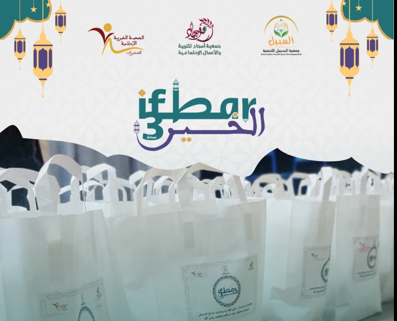

معلومات متاحة
معلومات متاحةبرامجنا في مسارين متكاملين
هيكلة برامج جمعية أمجاد
تشتغل جمعية أمجاد عبر برنامجين رئيسيين متكاملين، يضمان مجموعة من المشاريع التربوية والاجتماعية الميدانية. اختر أي برنامج لتصفح مشاريعه بسهولة.
المشاريع المرتبطة
تعرّفوا على مشاريع البرنامج
المشاريع المتاحة تقود إلى تفاصيلها، أما المبادرات قيد الإعداد فموسومة بوضوح.
معلومات متاحة معلومات متاحة
معلومات متاحةقريباً
أنشطة أمجاد
أنشطة تربوية وتفاعلية منتظمة داخل فضاءات المؤسسة التربوية.
المشروع قيد الإعدادقريباً
صبحيات المرح
صبحيات تنشيطية تجمع بين المتعة والتربية والقيم.
المشروع قيد الإعدادقريباً
مخيم أمجاد
مخيمات تربوية لتنمية الاعتماد على النفس، القيم، والمهارات الاجتماعية.
المشروع قيد الإعداد
دفء وإطعام
حملة موسمية لتوفير الدفء والوجبات للأسر المحتاجة خلال الشتاء.
اكتشف المشروع
معلومات متاحةإفطار الخير
برنامج رمضاني لإفطار الصائمين ودعم الأسر بالقفف الرمضانية.
اكتشف المشروعزكاة الصحة (التبرع بالدم + طبيب الغلبة)
مبادرات صحية تشمل حملات التبرع بالدم، وقوافل وخدمات طبية لفائدة الفئات المحتاجة.
اكتشف المشروعسفراء الخير
مبادرات تطوعية ميدانية لتعزيز روح العطاء وخدمة المجتمع.
المشروع قيد الإعدادبسمة يتيم
مبادرات اجتماعية لمرافقة الأيتام وإدخال الفرحة عليهم.
المشروع قيد الإعدادتفريج كربة
دعم الأسر في الأزمات والمواقف الطارئة وفق الإمكانيات المتاحة.
المشروع قيد الإعداد